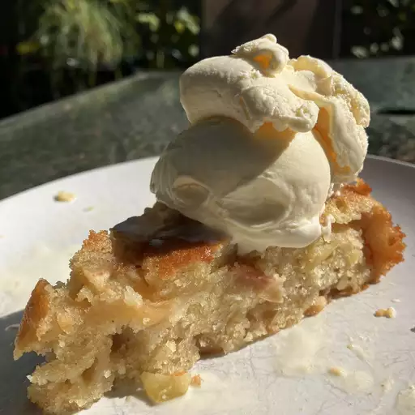

French Apple Cake

Description
This French apple cake is incredibly delicious. France is famous for its fabulously fancy pastries and baked goods, so you might get some skeptic looks when you tell them that this is your favorite apple cake – but trust me – this simple, rustic, easy to make cake is absolutely amazing.
Ingredients
- 3 large baking apples (such as Honeycrisp)
- 2 teaspoons apple cider vinegar
- ½ teaspoon freshly ground black pepper
- 1 cup all purpose flour
- 1 teaspoon baking powder
- 1 teaspoon kosher salt
- 1 stick unsalted butter, at room temperature
- 1/2 cup white sugar
- 2 tablespoons light brown sugar
- 2 large eggs
- 3 tablespoons dark rum
- 1/2 teaspoon vanilla extract
- 3 tablespoons white sugar for the top
- 1 tablespoon powdered sugar for dusting (optional)
Steps
- Preheat the oven to 350 degrees F (175 degrees C). Grease a 9-inch round cake pan with butter and line the bottom with parchment paper.
- Peel (or leave skin on) and core apples; cut into cubes between 1/4 and 3/8-inch in size. A little smaller is okay, but if your cubes are any larger, they won't get tender enough when baked. Add to a large bowl and toss with apple cider vinegar.
- Mix together flour, baking powder, and salt in a small bowl.
- In another bowl, beat butter, 1/2 cup white sugar, and brown sugar with an electric mixer until light and fluffy. Beat in 1 egg on high speed until it is fully incorporated and the mixture is smooth. Add the second egg and repeat. Mix in rum, vanilla extract, and 1/2 of the flour mixture. When the flour disappears add the rest, and fold in with a spatula.
- Fold in apples until evenly mixed into the batter. Transfer batter to the prepared pan, making sure all the batter is pressed in firmly. Smooth top and dust with remaining 3 tablespoons sugar.
- Bake in the preheated oven until a skewer inserted into the center comes out clean, about 45 minutes.
- Remove cake from oven and let cool in the pan for about 30 minutes. Invert cooled cake onto a wire rack, place a serving plate on top, and flip back over. Dust top with powdered sugar and serve.